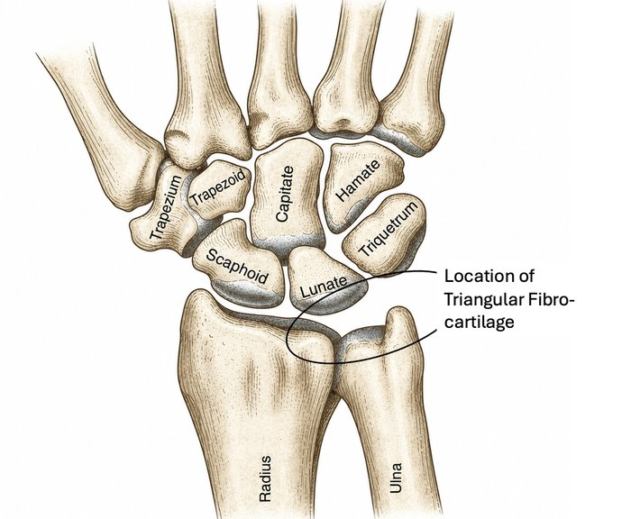
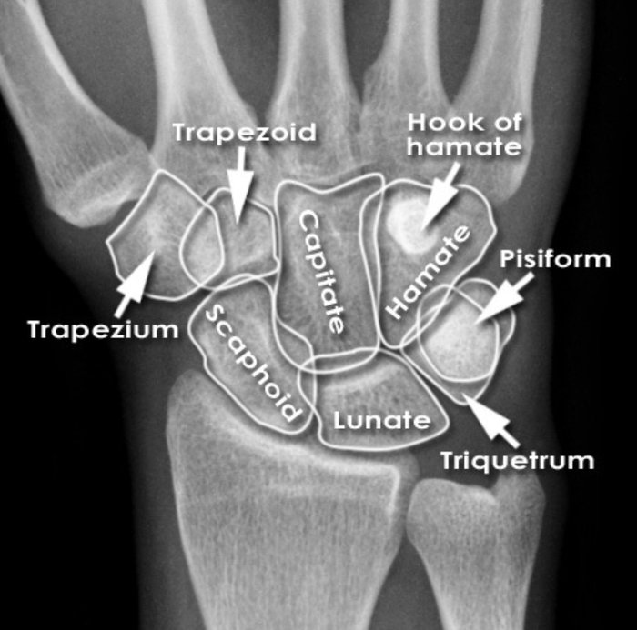
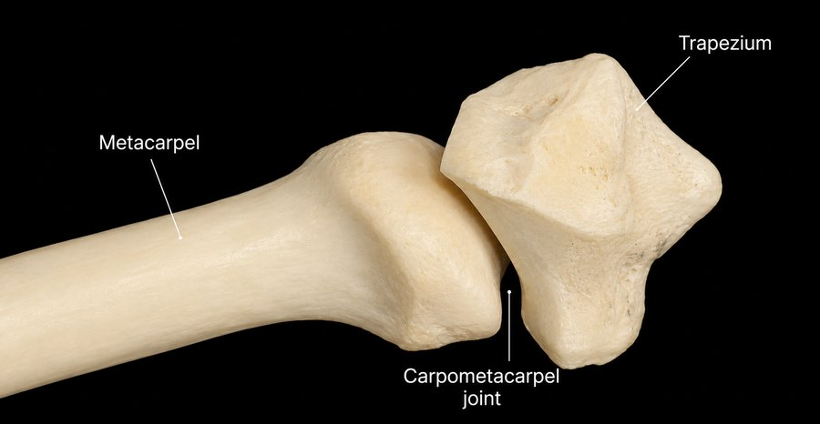
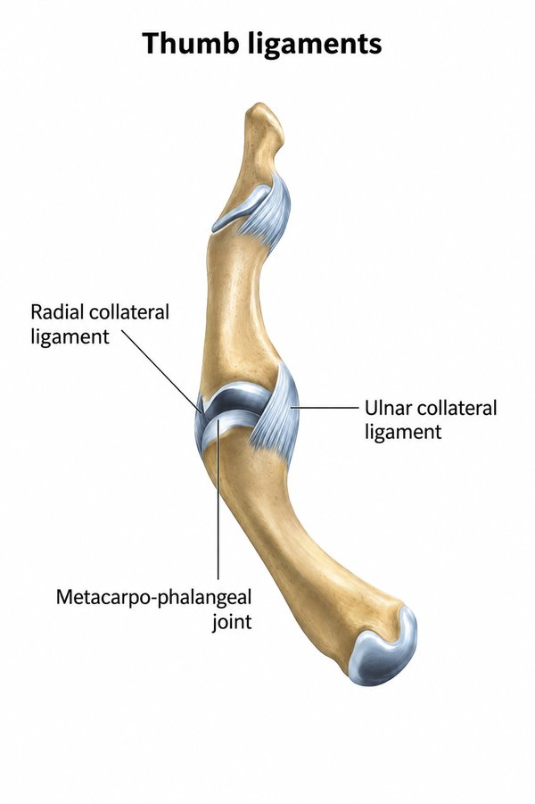
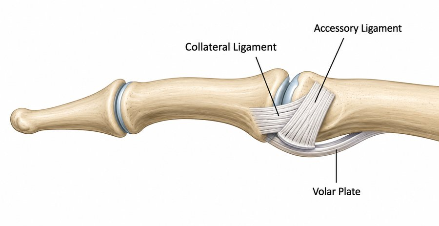
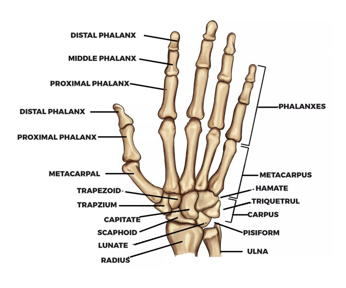
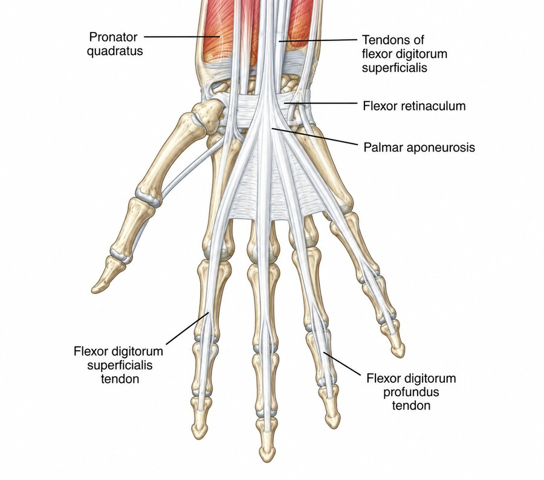
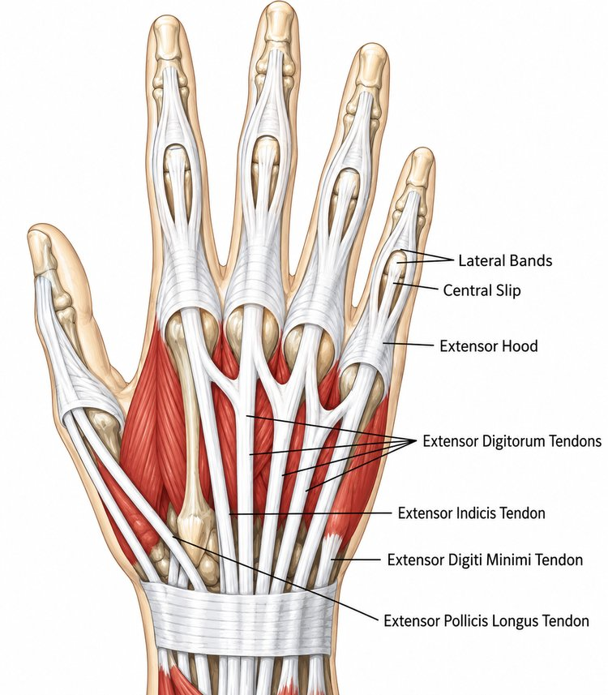
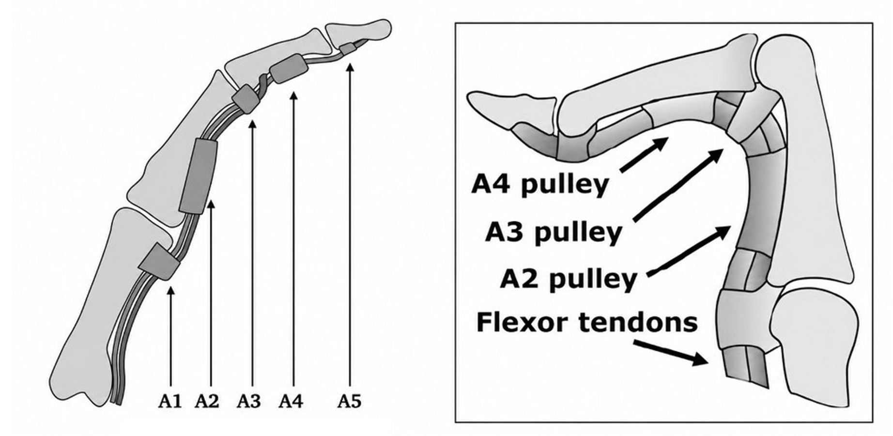

2.1 Purpose of This Module
This module builds directly on the sport context established in Module 1. It covers the bones, muscles, tendons, and pulleys of the climbing hand — but at the depth expected of a physiotherapist: full osteology and ligamentous detail, differentiated tendon testing, the complete pulley complex, and the biomechanics of load transfer under different grip types.
It also introduces a topic essential to clinical practice: the immature skeleton. Growth plate anatomy and youth-specific injury patterns are covered in Section 2.6, since paediatric and adolescent climbers present with a genuinely different injury profile to adults — one that is easy to miss if assessed using an adult framework.
2.2 Osteology of the Wrist, Thumb & Fingers
The Wrist Complex
The wrist comprises eight carpal bones arranged in proximal and distal rows between the forearm and metacarpals. Climbing-relevant structures are summarised below; the wrist's role in mechanical grip advantage — and why a flexed wrist reduces effective grip strength — is revisited in Section 2.5.
| Bone | Row | Clinical Relevance in Climbers |
|---|---|---|
| Scaphoid | Proximal | Thumb-side; vulnerable in FOOSH-type falls (fall onto an outstretched hand) and hard boulder landings. Non-union risk if missed — maintain a low threshold for imaging in a climber with persistent radial wrist pain after a fall. |
| Lunate, Triquetrum, Pisiform | Proximal | Pisiform sits within the pisotriquetral joint on the ulnar/palmar wrist; can become symptomatic with repetitive crimped, ulnar-deviated loading. |
| Hamate (hook) | Distal | Small-finger side; the hook projects into the palm beneath the ring/little finger flexor tendons. A recognised stress and, less commonly, fracture site with repetitive ulnar-side crimping load and hard moves using underclings. |
| Trapezium, Trapezoid, Capitate | Distal | Trapezium forms the base of the thumb CMC (carpometacarpal) joint; capitate is the central keystone of the distal row and rarely a primary source of climbing pathology. |
| TFCC (Triangular Fibrocartilage) | (soft tissue) | Cartilaginous stabiliser on the ulnar wrist between ulna and carpus. Loaded in sidepulls, underclings, and any ulnarly-deviated loaded wrist position, such wrapping big slopers. A relevant differential in ulnar-sided wrist pain alongside hamate and pisotriquetral pathology. |


The Thumb
The thumb's two phalanges and saddle-shaped carpometacarpal (CMC) joint give it a range of motion unlike any finger, most importantly opposition — essential to pinch, sidepull, and undercling positions. Its three joints and their climbing-specific relevance:
- CMC joint — saddle joint at the wrist base; the most mobile thumb joint and the one most associated with overuse change in climbers with heavy pinch-training histories.

- MCP (MetaCarpal Phalangeal) joint — hinge joint stabilised by the ulnar collateral ligament (UCL); UCL sprain ("skier's/gamekeeper's thumb") is a relevant differential after a fall onto an outstretched, loaded thumb.
- IP (InterPhalangeal) joint — the thumb's single interphalangeal joint, loaded during pinch and compression grip positions.

The Fingers
Each finger (excluding the thumb) has three phalanges and three load-bearing joints: MCP, PIP (Proximal InterPhalangeal), and DIP (Distal InterPhalangeal). The PIP is the largest and most powerful of the three, and — stabilised anteriorly by the volar plate and enclosed by a robust capsule — is the joint most frequently involved in climbing injury, both through pulley pathology, collateral ligament sprains and direct volar plate/capsular sprains. The DIP flexes preferentially in open-hand and drag positions and is the anatomical region of A4 pulley loading, it is hyperextended in intense crimp positions, which can lead to joint sprains on the dorsal aspect of the joint due to compression forces.


2.3 Musculature: Extrinsic and Intrinsic Systems
A point worth making explicit with patients and coaches alike: there is no muscle tissue within the fingers themselves. All finger flexion force originates in the forearm and is transmitted distally via long tendons — which is why forearm fatigue, not hand fatigue, is the dominant limiter in climbing endurance, and why targeted forearm-based rehabilitation (Module 5) is central to finger injury management.
- FDP (flexor digitorum profundus) — runs the full length of the finger to insert at the distal phalanx; the primary force-generator loaded when hanging on small edges. Clinically isolated by holding the PIP in extension and asking the patient to flex the DIP. The FDP tendons are the origin site of the lumbrical muscles. The lumbricals therefore connect the little and ring finger and the ring and middle finger FDP's respectively.
- FDS (flexor digitorum superficialis) — inserts at the middle phalanx near the PIP; shares and distributes load rather than generating peak force alone. Clinically isolated by holding the adjacent fingers in extension and asking the patient to flex the PIP of the test finger.

- Extensor mechanism — comprising the central slip and sagittal bands; rarely the primary injury site in climbing but worth considering in atypical PIP presentations, particularly where extensor lag or a boutonnière-type deformity is observed. Overloading the extensor mechanism through intense crimping can contribute to DIP pathology.

- Intrinsics — lumbricals and interossei provide fine motor coordination and digit stability rather than raw force; thenar and hypothenar groups control thumb opposition and small-finger positioning respectively.
2.4 The Flexor Pulley System
The annular (A1–A5) and cruciate (C1–C3) pulleys form a retinacular sheath that holds the flexor tendons close against the phalanges through the finger's range of motion. Without this system, a loaded tendon would lift away from the bone in a straight line between attachment points — bowstringing. Bowstringing is visible to the naked eye only when the A2, A3 and the A4 pulley are completely ruptured, less severe bowstringing can be seen on ultrasound.
| Pulley | Location | Clinical Relevance |
|---|---|---|
| A1 | Over the MCP joint | Rarely injured in isolation in climbers; more commonly implicated in trigger finger pathology in the general population. |
| A2 | Proximal phalanx, just distal to MCP | The most frequently injured pulley in climbing. Bears disproportionate load during full and half-crimp positions due to the angle change it imposes on the flexor tendon. |
| A3 | Over the PIP joint | Small annular pulley; rarely injured alone but can be involved in multi-structure PIP injuries alongside the volar plate. |
| A4 | Mid-shaft, middle phalanx | Second most commonly injured pulley. Climbers who favour open-hand/drag positions have an increased demand at the DIP/A4 region — however the A4 pulley is still loaded 4x more in the crimp position vs the drag. |
| A5 | Over the DIP joint | Distal-most annular pulley; injury is uncommon in isolation. |
| C1–C3 | Cruciate pulleys, interspersed between annular pulleys | Thinner and more pliable than the annular pulleys; provide flexibility during finger flexion. Extremely rarely the primary injury site but may be involved in higher-grade, multi-pulley rupture presentations. |

Pulley injuries are commonly graded on a four-tier clinical scale, from Grade I (pulley strain, no discontinuity) through to Grade IV (multiple pulley rupture, often with bowstringing and flexor sheath compromise). Full grading criteria and assessment technique are covered in Module 4 (Assessing & Diagnosing Finger Injuries).
2.5 Load Transfer & Grip Biomechanics
The functional chain of force transfer runs: hold → fingertip (DIP) → PIP → A2 pulley → flexor tendon → forearm muscle. Where load concentrates along that chain is determined largely by grip type, which is why grip position — not simply grip strength — is central to both injury mechanism and rehabilitation planning.
| Grip Type | Joint Position | Primary Structures Loaded |
|---|---|---|
| Full crimp | PIP acutely flexed; DIP hyperextended; thumb often locked over index nail | Highest relative force through the A2 pulley and FDS; thumb lock adds CMC/MCP loading. Associated with the highest acute pulley injury risk of any grip type. This grip exerts 12–20% more fingertip force than the half crimp, shifts the main finger load towards the index finger, and stabilises the wrist. |
| Half crimp | PIP flexed; DIP near neutral; no thumb lock | Still concentrates load at A2 and A4 but with less mechanical disadvantage than full crimp; the default training and competition grip for many climbers. The middle and ring finger share the biggest forces in this grip. |
| Open hand / drag | PIP relatively extended; DIP more flexed | Shifts demand toward the DIP joint, generally lower peak pulley force but different injury patterns. |
| Pocket grip | Variable; 1–3 fingers isolated | Concentrates full load through fewer digits and their pulleys; associated with isolated single-finger pulley and joint injury, particularly on mono or two-finger pockets due to the rotational nature of the exerted force. |
| Pinch | Thumb opposed against fingers | Loads thumb CMC and MCP structures heavily; repetitive heavy pinch training is associated with thumb CMC overuse in older/high-volume climbers. |
Two further mechanical principles are clinically useful when reasoning about training load and injury risk:
- Smaller holds increase tendon and pulley force for an equivalent bodyweight, since less contact area is available to distribute load.
- Tendon and pulley tissue adapt to load through slow collagen remodelling, considerably more slowly than the muscular strength gains of the forearm flexors. This mismatch — muscular capacity outpacing connective tissue tolerance — underlies a large proportion of overuse pulley and tendon injuries and is a key reasoning point when advising on training progression (Module 5).
2.6 The Immature Climbing Hand: Growth Plates & Youth-Specific Injury
The paediatric and adolescent climbing population presents a genuinely different injury picture. Until skeletal maturity, the growth plate (physis) — not the A2 pulley — is typically the weakest structural point in a loaded finger. Understanding this shifts both your differential diagnosis and your management approach in younger climbers.
Physeal Anatomy & Vulnerability
The physis is a cartilaginous growth zone near the base of each phalanx (and at the distal radius/ulna) that allows longitudinal bone growth until it fuses in adolescence. Cartilage has lower tensile and shear strength than the mature pulley or tendon tissue surrounding it, meaning that in a skeletally immature climber, repetitive or high-force crimping is more likely to stress the physis than to strain the A2 pulley — the reverse of the typical adult injury pattern.
This is sometimes referred to informally as "climber's finger" in youth populations, distinct from adult pulley injury, and most commonly affects the growth plate at the base of the middle phalanx — at the PIP joint region — of the middle or ring finger, the digits subjected to the greatest crimping load.
Presentation & Mechanism
- Most cases present as an insidious, activity-related ache rather than a single traumatic event, consistent with a repetitive stress reaction (analogous to a Salter-Harris I pattern) rather than an acute fracture.
- Acute presentations can occur — typically a sudden, sharp pain during a dynamic move or a hard catch on a crimped finger — and should be assessed with a higher index of suspicion for a true fracture pattern.
- Risk appears elevated during periods of rapid growth (peak height velocity), when the physis is relatively more vulnerable, and in climbers undertaking early-specialised, high-volume finger training — particularly hangboard and campus board work — before skeletal maturity.
| Site | Approximate Closure — Female | Approximate Closure — Male |
|---|---|---|
| Phalangeal physes (fingers) | ~14–16 years | ~16–18 years |
| Distal radius/ulna | ~16–17 years | ~18–19 years |
Figures are approximate population averages with substantial individual variation; they are a guide for clinical suspicion, not a substitute for assessing the individual patient in front of you.
Differentiating Pulley Injury from Physeal Injury
Because the clinical presentation can overlap — both present as finger pain aggravated by crimping — the following features help direct your reasoning and onward management, particularly in the young climber where mechanism alone is not a reliable differentiator.
| Feature | Pulley Injury (typically post-pubertal / adult) | Physeal Stress Injury (skeletally immature) |
|---|---|---|
| Typical onset | Often acute — a single loud "pop" or sudden pain during a dynamic or crimped move. Insidious symptom onset due to chronic overload is possible. | Often insidious — gradual ache over weeks of training, though can present acutely after a hard catch. |
| Pain location | Volar (palm-side) aspect of the proximal phalanx, at the A2/A4 region. | Often dorsal or peri-articular at the base of the middle phalanx (PIP joint region), over the physis itself. |
| Palpation | Tenderness volar to the finger, sometimes with palpable bowstringing on resisted flexion in higher-grade tears. | Tenderness localised over the growth plate; no bowstringing sign. |
| First-line imaging | Ultrasound (dynamic, load-comparison views) or MRI for soft-tissue detail. | Plain radiograph, ideally with contralateral comparison view, to assess physeal widening. Commonly only seen on x-ray once it has progressed to an epiphyseal injury and healing has begun in the form of callus formation. |
| Immediate management | Grade-dependent — taping/splinting, activity modification, graded reloading (Module 5). | Load cessation from crimping/finger-intensive training until symptom resolution and, where indicated, medical review. |
A skeletally immature climber presenting with persistent finger pain warrants a lower threshold for plain film imaging than an adult presenting with an equivalent history, given the different tissue at risk and the potential — if a physeal injury is missed or loaded through — for growth disturbance or angular deformity. Management in this population centres on load modification rather than the graded pulley-loading protocols appropriate to adult pulley injury (Module 5).
From a prevention standpoint, the practical implication for coaches and clinicians alike is straightforward: full-crimp positions and maximal-intensity finger training are generally best delayed until closer to skeletal maturity, with particular caution during identified growth spurts. This is a population-level principle to apply alongside, not instead of, individual clinical assessment.
Summary
The climbing hand is a mechanically simple but highly loaded and adapted structure: a chain of small joints, two long extrinsic flexor tendons, and a pulley system holding those tendons against the bone. Grip type determines where along that chain load concentrates, and — in the skeletally immature climber — the physis, rather than the pulley, is frequently the structure most at risk. This anatomical and biomechanical foundation underpins the injury mechanisms covered in Module 3 and the site-by-site assessment approach in Module 4.
References
General osteology, joint classification, and extrinsic/intrinsic musculature (Sections 2.2–2.3) reflect standard clinical anatomy and are not climbing-specific; any core hand anatomy reference will support this content. Climbing-specific claims throughout this module are drawn from the following sources.
Wrist, Thumb & Finger Osteology (2.2)
Schöffl V, von Schroeder H, Lisse J, El-Sheikh Y, Küpper T, Klinder A, Lutter C. Wrist Injuries in Climbers. Am J Sports Med. 2023.
Lutter C, Schweizer A, Hochholzer T, Bayer T, Schöffl V. Pulling Harder than the Hamate Tolerates: Evaluation of Hamate Injuries in Rock Climbing and Bouldering. Wilderness Environ Med. 2016;27(4):492–499.
Henderson CJ, Kobayashi KM. Ulnar-sided wrist pain in the athlete. Orthop Clin North Am. 2016;47(4):789–798.
Musculature, Tendons & Pulley System (2.3–2.4)
Miro PH, vanSonnenberg E, Sabb DM, Schöffl V. Finger Flexor Pulley Injuries in Rock Climbers. Wilderness Environ Med. 2021.
Schöffl V, Hochholzer T, Winkelmann HP, Strecker W. Pulley Injuries in Rock Climbers. Wilderness Environ Med. 2003;14(2):94–100.
Lutter C, Tischer T, Schöffl VR, et al. To Tape or Not to Tape: Annular Ligament (Pulley) Injuries in Rock Climbers — A Systematic Review. 2022.
Vigouroux L, Quaine F, Paclet F, Colloud F, Moutet F. Middle and Ring Fingers Are More Exposed to Pulley Rupture Than Index and Little During Sport-Climbing: A Biomechanical Explanation. Clin Biomech. 2008;23(5):562–570.
Grip Biomechanics & Load Transfer (2.5)
Schweizer A. Biomechanical Properties of the Crimp Grip Position in Rock Climbers. J Biomech. 2001;34(2):217–223.
Schweizer A. Biomechanics of the Interaction of Finger Flexor Tendons and Pulleys in Rock Climbing. Sports Technol. 2008;1(6):249–256.
Schöffl I, Oppelt K, Jüngert J, Schweizer A, Neuhuber W, Schöffl V. The Influence of the Crimp and Slope Grip Position on the Finger Pulley System. J Biomech. 2009;42(13):2183–2187.
Moor BK, Nagy L, Snedeker JG, Schweizer A. Friction Between Finger Flexor Tendons and the Pulley System in the Crimp Grip Position. Clin Biomech. 2009;24(1):20–25.
Growth Plates & Youth-Specific Injury (2.6)
Schöffl V, Schöffl I, Flohé S, El-Sheikh Y, Lutter C. Evaluation of a Diagnostic-Therapeutic Algorithm for Finger Epiphyseal Growth Plate Stress Injuries in Adolescent Climbers. Am J Sports Med. 2022;50(12):3298–3305.
Meyers RN, Howell DR, Provance AJ. The Association of Finger Growth Plate Injury History and Speed Climbing in Youth Competition Climbers. Wilderness Environ Med. 2020.
Schöffl I, Schöffl V. Epiphyseal Stress Fractures in the Fingers of Adolescents: Biomechanics, Pathomechanism, and Risk Factors. Eur J Sports Med. 2015;3(1):27–37.
Desaldeleer A, Le Nen D. Bilateral Fracture of the Base of the Middle Phalanx in a Climber: Literature Review and a Case Report. Orthop Traumatol Surg Res. 2016;102(3):409–411.
Schöffl V, Hochholzer T, Imhoff A. Radiographic Changes in the Hands and Fingers of Young, High-Level Climbers. Am J Sports Med. 2004;32(7):1688–1694.
25 questions, 80% pass mark. Passing unlocks Module 3 automatically.